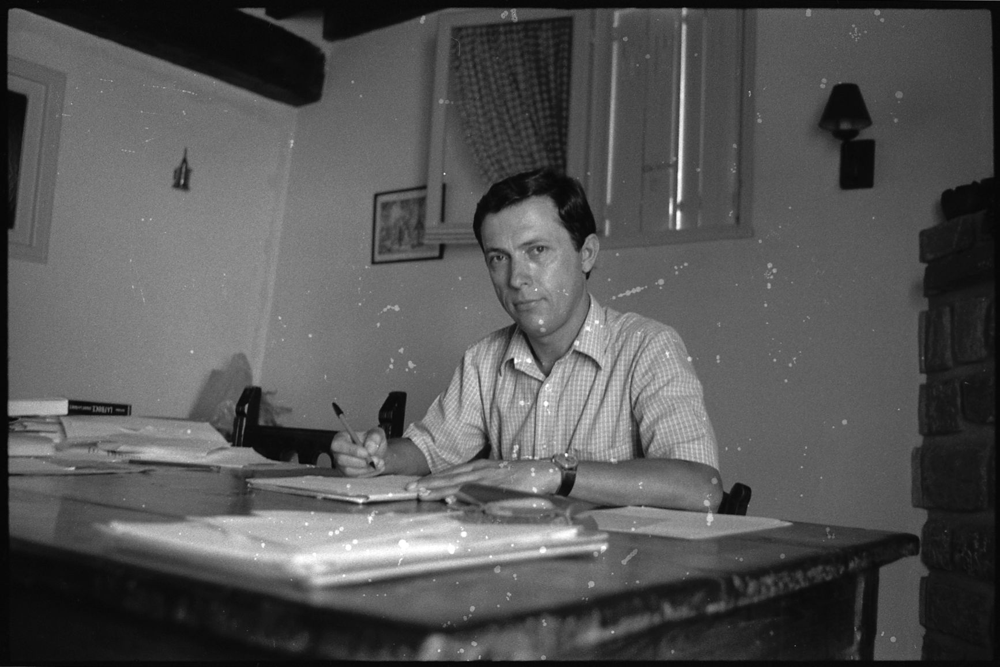

Other Services
Besides Web Design, I also provide Video Editing (and subtitles),Social Media Advertisment and Photo Restoration:
Video editing is another one of my passions, as well as translating and subtitling from English to Spanish or vice versa. I offer video editing services to companies for advertising and also for private events such as weddings,birthday parties, and more. In video editing there are all kinds of different possibilities to custom-create a video. Either by adding still images and combine them with any background music or using or using video footage that can be edited anyway the customer requests. It can be basic editing or more creative and dynamic. We can discuss your ideas and expectations for your custom-made video and create a storyboard to follow. Many different captions and efects can be added, as well as watermarks.

These are examples of my work with photo resoration. I specialize in old photos that contain scratches and imperfections and remove them to turn make them nice and clean. I also can colorize black-and-white pictures after restoring them if the customer desires to add color to them. Enhancing, retouching and photoshopping are also other options I offer. I will be adding examples of my work soon.